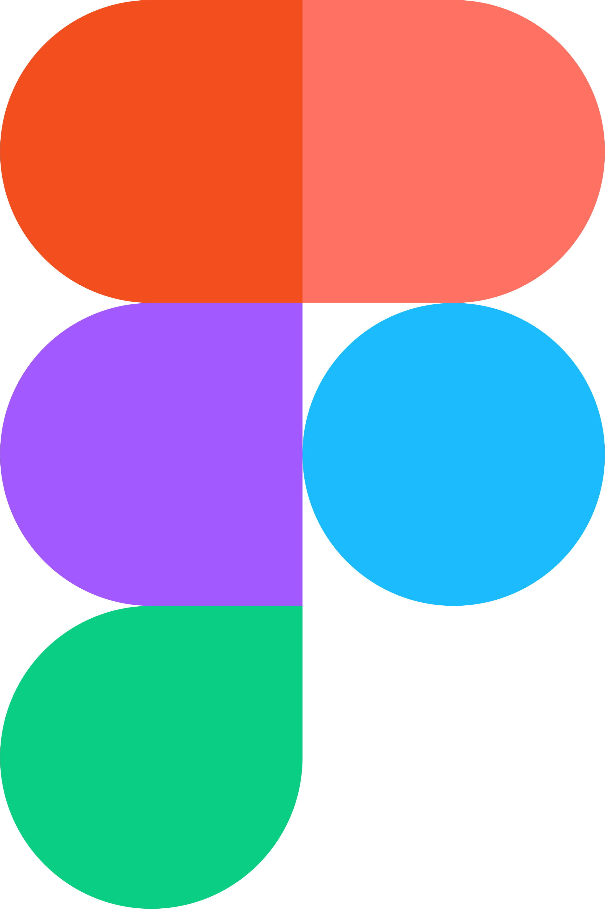
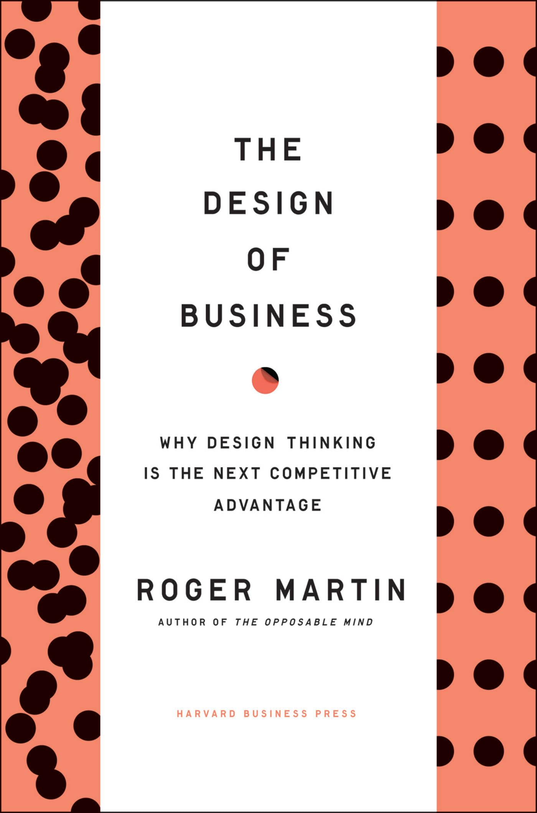
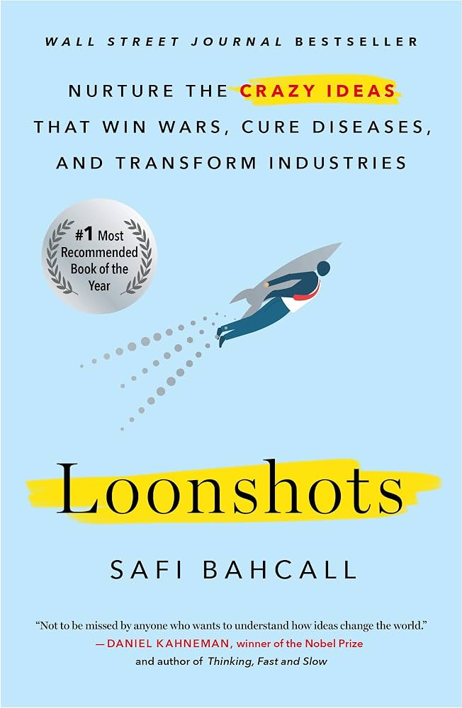
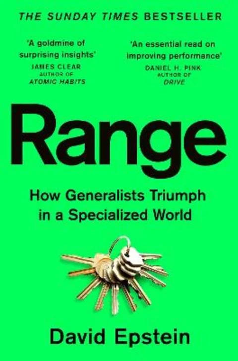
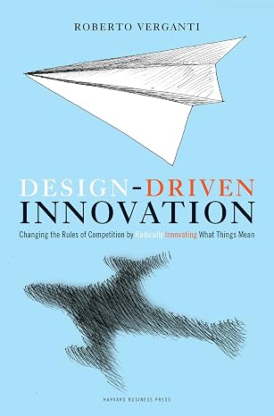
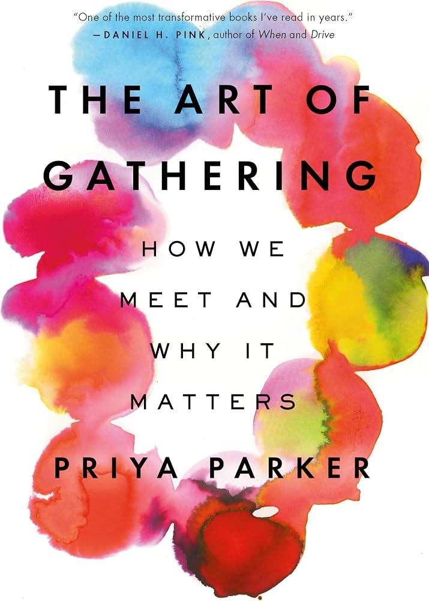

12 ans de design, et une question en plus.
Depuis douze ans, je conçois des plateformes, des tableaux de bord, des parcours de soin et des outils de vente, pour des groupes comme AXA, Novo Nordisk, Nexans ou Orange, et pour de plus petites structures.

Ces dernières années, j'ai enrichi ma pratique par l'anthropologie, la pensée systémique et des lectures sur la manière d'innover, de décider et de faire collectif. Ces explorations m'ont amené à élargir la question :
Qu'est-ce qui permet à un objet de trouver sa place, d'être adopté et de continuer à évoluer ?
Pour explorer, aligner et concevoir :

FigmaDesign Claude CodePrototypage
Claude CodePrototypage- PerplexityExploration
- DovetailRecherche utilisateur
- NotionOrganisation
- MiroAteliers & carto
Comment je travaille.
Je travaille avec les designers, les experts métiers et les équipes techniques pour comprendre les usages, confronter les points de vue et donner une direction au produit.
Selon les besoins, je mène l'enquête, je facilite les échanges ou je donne forme aux pistes : parcours, interfaces, prototypes. Je cherche à relier ce que l'on apprend, ce que l'on décide et ce que l'on conçoit, pour que le travail avance et que chacun puisse y contribuer.
D'autres terrains pour explorer ces questions.
Ces questions nourrissent aussi mes engagements auprès de TiBillet, de La MYNE -avec Les Réciprocités - et de Zoepolis. D'autres contextes pour explorer les liens entre les personnes, les collectifs et ce que l'on conçoit ensemble.
Quelques lectures qui ont fait évoluer ma pratique.

The Design of BusinessRoger MartinPenser la valeur, les choix et les conditions de mise en œuvre. 
Design-Driven InnovationRoberto VergantiRegarder ce que l'innovation rend possible, au-delà de l'usage. 
RangeDavid EpsteinCroiser les domaines pour déplacer le problème. 
LoonshotsSafi BahcallVoir ce que l'organisation permet aux idées. 
The Art of GatheringPriya ParkerConcevoir les conditions de la rencontre.